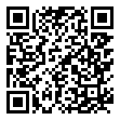

🟠 3ème · Période 5 · Quiz
Séquence 8 : Projet Smart Object, de la conception au prototype
16 questions pour vérifier tes acquis, avec correction immédiate.
🔗 Lien direct vers cette page

38Q
Scanne le QR code, ou saisis ce code sur la page d'accès direct du site.
https://lyceefrancaisdetananarive.github.io/technologie/go.html?c=38Q